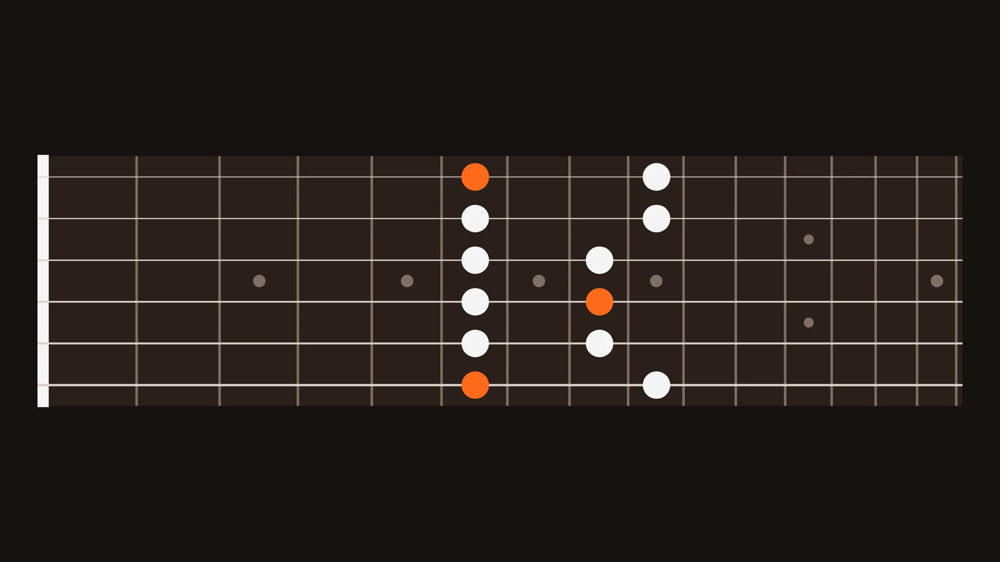

Metin Nafiz Tanır
Antalya'da full stack low-code geliştiriciyim. Shark Instruments'ta Shark Guitars'ın sitesini ve 3D gitar tasarım aracını geliştiriyorum.
İşlerime bakGitar çalarım.
Kod yazarım.
Merhaba, ben Nafiz
- Şimdi
- Shark Instruments, Antalya
- İş
- Uygulama geliştirme ve yönetimi
- Okul
- Bilgisayar Mühendisliği, SDÜ
- Dil
- Türkçe, İngilizce
Bilgisayar mühendisiyim. 2024'ten beri Shark Instruments'ta çalışıyorum.
Shark Guitars'ın online mağazası ve müşterilerin gitarlarını tarayıcıda tasarladığı 3D araç üzerinde çalışıyorum. Wappler ile low-code geliştiriyorum, altında Node.js ve Express var. Site AWS'de çalışıyor, 3D kısmı Babylon.js ile.
Shark dışında yaptığım birkaç iş aşağıda. Bir iş ya da ortak proje için yazabilirsin.
Bazı işlerim
-

Shark Guitars
3D tasarım aracı ve mağaza · 2024'ten beri
Sapı, manyetikleri ve analog efektleri elle değiştirilebilen modüler bir elektro gitarın mağazası. Müşteri gitarını tarayıcıda 3D olarak tasarlıyor, ödemeyi iyzico ile yapıyor.
Wappler · Node.js · Babylon.js · AWS ECS, RDS, CloudFront · iyzico
sharkguitars.com -
azalanfiyat
Pazar yeri · 2026
Satıcı başlangıç fiyatını, taban fiyatı ve düşüş adımını belirliyor, fiyat zamanla iniyor. “Hemen Al”a ilk basan, ürünü o anki fiyattan alıyor.
React Router · Hono · Workers · D1 · Durable Objects · R2 · Queues · Workers AI
azalanfiyat.com -

sensoyle
Alım ilanları · 2025
Burada ilanı alıcı veriyor. Aradığı evi ya da ikinci el arabayı yazıyor, satıcılar da onu buluyor.
React · Vite · Redux Toolkit · Firebase · Cloud Functions · GitHub Actions
sensoyle.com -

MekanRandevu
Randevu uygulaması
Berber, diş hekimi, veteriner gibi işletmeleri kategoriye göre bulup online randevu aldığın bir uygulama. Haritası Leaflet ve OpenStreetMap ile.
Node.js · Express 5 · node:sqlite · EJS · Leaflet + OpenStreetMap
Demo için bana yaz
-

Evin Gayrimenkul
Emlak sitesi · 2026
Ankara Yaşamkent'teki bir emlak ofisinin sitesi. Houzez temalı WordPress, yerelde Docker'da geliştiriyorum.
WordPress · Houzez · PHP · Docker · MariaDB
evingayrimenkul.net
Gitar tarafı
Kod yazmadığım zamanlarda gitar çalıyorum. Shark'ta ikisi bir arada: bir gitar şirketinde yazılım geliştiriyorum.
Aşağıdaki klavyeyi bu site için yaptım. Bir ton ve gam seç, kalıbın sapta nereye düştüğüne bak, istersen çal.
Nafiz
Gitar sapındaki noktalar seçtiğin gamın notaları. Ton ya da gam seçince yerleri değişir, “Kalıbı çal” da açık turuncu şeritteki notaları sırayla çalar.
kalıp(,
ton: )Aynı kalıp, her tonda
Deneyim
Toplam 4 yıl 10 ay deneyim (staj ve yarı zamanlı iş hariç)
- Full Stack Low Code DeveloperShark Instruments · AntalyaNis 2024 – bugün2 yıl 8 ay
- IT ConsultantKaya Yachting · FethiyeŞub 2023 – Nis 20241 yıl 3 ay
- Frontend DeveloperE-adam Dijital Reklam · AntalyaEki 2021 – Oca 20224 ay
- Yurt İçi Satış ve Pazarlama Destek MühendisiCW Enerji · AntalyaHaz – Eki 20215 ay
- Frontend DeveloperCW Enerji · AntalyaŞub – Haz 20215 ay
- Java Web Developer, stajyerKarayolları 13. Bölge MüdürlüğüTem – Eyl 20203 ay
- Web Developer, yarı zamanlıSüleyman Demirel Üniversitesi · radyo.sdu.edu.trEki 2017 – Haz 20189 ay
Eğitim
- Bilgisayar Mühendisliği, lisansSüleyman Demirel Üniversitesi2012 – 2020
- React: Hooks, Redux & FirebaseUdemy sertifikası2023
Neyi nerede kullandım
- Wappler (low-code), Node.js, ExpressShark Guitars
- Babylon.js ile 3D konfigüratörShark Guitars
- AWS: ECS Fargate, RDS, S3, CloudFrontShark Guitars
- Cloudflare Workers, D1, Durable Objects, R2azalanfiyat
- React, React Router, Hono, Drizzleazalanfiyat
- React + Vite, Redux Toolkit, Firebasesensoyle
- GitHub Actions CI/CD, Vitest, Playwrightazalanfiyat, sensoyle
- WordPress, PHP, Docker, MariaDBEvin Gayrimenkul
- Remotion ile tanıtım videolarıazalanfiyat
Diller
- Türkçeana dil
- İngilizcetam profesyonel
- Almancabaşlangıç
Yaz bana
Bir proje, bir iş teklifi ya da gitar muhabbeti, fark etmez. E-postayla dönerim.
Oka basınca e-posta uygulaman bu mesajla açılır. Sen göndermeden hiçbir şey gitmez.
- E-posta
- mntanir@hotmail.com
- in/mnafiztanir
- GitHub
- mntanir
- Konum
- Konyaaltı, Antalya